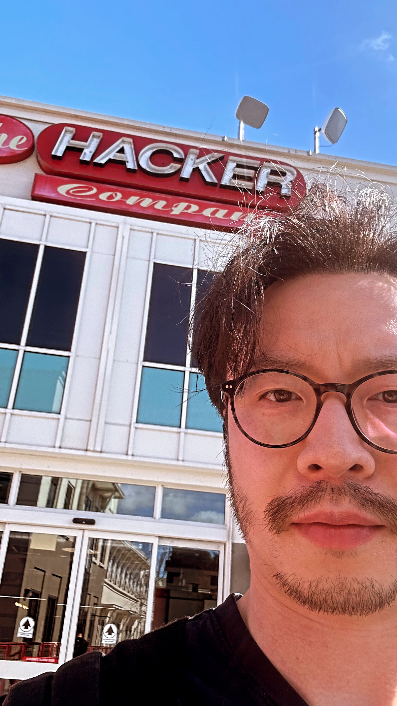

I left Facebook/Meta this Friday.
When I joined Facebook 11 years ago, I was just hoping to work with cool hackers for a few years, experience the Silicon Valley tech scene, make some money, and then go back to school to continue my theoretical computer science research. I soon became obsessed with the impact I got to make on billions of people, the coworkers I got to collaborate with and learn from, and the new skills and mindset shifts I got to pick up every day. One thing led to another, this obsession kept me there for 11 years, even though I would always say l’d stay for just one more year in every employee experience survey.
I feel extremely lucky to have started my career there. Facebook has not only provided a platform for me to gain hands-on engineering, product and people management experiences, but more importantly, has also taught me what it truly means to be world class. Inspired by the smartest, kindest and most thoughtful colleagues I’ve ever worked with, I constantly pushed myself to meet the world class standard, seizing each and every learning opportunity to get one step closer to it every day. That process has transformed me from a green new grad into a mature professional, manager and leader. I can’t be thankful enough for that.
However, it takes extreme focus to play a world class game. While I tried to squeeze out every last bit of my potential in supporting people, building strategy, driving execution, scaling the org, I largely ignored everything else. When COVID broke the rhythm and triggered me to reflect, I realized that I’d fallen behind on so many things – professionally, I had little understanding of the latest technologies or what was going on in the broader tech industry; personally, I had stopped pursuing my hobbies and hadn’t played soccer or guitar or watched a full Premier League game or been to a music festival for years. Then, I tried to catch up by setting a stronger boundary between the day job and the “extracurricular” learnings and activities, but ended up not only making little progress in the side gigs, but also becoming less productive at work.
That exploration did give me two critical insights about myself though.
- I’m not satisfied with doing an average job, and I can’t do extraordinary work if I don’t give it my all.
- I seem to enjoy reading papers, writing code and generally building stuff more than solving complex org problems.
With these insights, I started to question myself – am I really on the right long term career path? Specifically, would I feel proud and fulfilled if I gave the next decade of my full dedication to leveling up my game as a corporate leader? This question seems extremely hard to answer without actually trying out the alternatives, so I took the leap to quit Meta to figure it out. It feels really risky and costly to leave such a great support network (and lots of unvested RSUs) behind, but I’m pretty sure that the opportunity cost is even higher, as I’ve been repeatedly reminded by the countless posters on the Meta campus that the biggest risk is not taking any risk.
 Selfie with the “the hacker company” sign on my second-to-last day; I miss the early FB days of being a hacker.
Apart from catching up on personal interests, the professional side of my sabbatical plan focuses on the following two themes, with the goals of (a) fulfilling my intellectual curiosity, and (b) figuring out my true career aspiration and building a foundation for pursuing it.
- Technology: deep dive into machine learning. Most of my ML expertise came from my early experience tech-leading the “People You May Know” team in the pre-deep-learning era, where the focus was mostly on problem formulation, feature engineering and ML systems rather than core modeling. I feel left behind on all the exciting new advancements in Deep Learning and Generative AI. In the last year or so, I did spend some time on the side taking online courses [1] and reading papers, but it’s far from a real deep dive. To go deeper, I’ll start with the following plan.
- Theory: read the following textbooks for a rigorous and systematic understanding of ML.
- Probabilistic Machine Learning (book 1 and 2)
- Reinforcement Learning: An Introduction
- Practice: implement classic papers, compete on Kaggle and play with tutorials on Hugging Face.
- Theory: read the following textbooks for a rigorous and systematic understanding of ML.
- Business/People: understanding the startup ecosystem and meeting awesome people outside of big tech. While I know a great deal about Meta and have built a strong internal network, I’ve interacted much less with the broader tech ecosystem, especially the startups scene. My current learnings largely came from some great business podcasts [2], as well as YC’s startup school. That’s all casual passive consumption though. Looking ahead, I plan to make the consumption more structured, and more importantly, invest more in production and interaction.
- Online: publish learnings in this blog, contribute to open source projects, and actively engage in tech communities on Twitter/X, Hacker News, etc.
- IRL: go to meetups, hackathons and conferences; explore angel investing, consulting, mentorship; interview with interesting companies.
I’m super excited to step into this adventure. It feels so great that once again, the focus can be nothing but learning and exploration. As part of Theme 2, I’ll be updating this blog with my learnings as I go along this journey. Feel free to drop me an email if you have any feedback/suggestions, are also going through soul searching and need a sounding board, would like to get career advice on how to succeed at a big tech, or simply would like to chat about learning ML or the tech industry.
-
Online courses that I took in the last year and found helpful.
- fast.ai by Jeremy Howard: First course I took. Can’t remember much of it now, but it was a good start to get the ball rolling.
- Deep Learning Course by François Fleuret: The course that I dove the deepest into. I ran into it on Twitter and was drawn by its mathematical clarity. The last few lectures felt too high level so I ended up using its references as paper pointers and read the papers as a complement.
- Machine Learning Specialization and Deep Learning Specialization by Andrew Ng: They are a good mix of theory and practice, and are beginner friendly. I ignored them initially thinking they were too mainstream and didn’t take them until after hearing strong recommendation from a respected ML engineer co-worker. It turns out they are classics for a reason. Now I’d recommend anyone beginning their ML journey with these.
- Deep Learning Fundamentals by Sebastian Raschka: It focuses on more practical side of model training. The last units guide you to train and fine-tune reasonably large models, which is pretty cool.
- Deep Generative Models by Volodymyr Kuleshov: Pretty dense. I’m still digesting the lectures on score based models and diffusion models.
-
Acquired, Invest Like the Best, The Logan Bartlett Show, All-In and Bg2 ↩︎